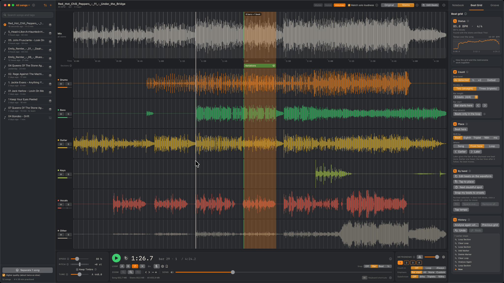

earworq.
Hear deeper. Play better.
A dedicated music practice environment for Mac. Hear the details in your favourite recordings. Isolate instruments, slow things down, create precise loops, explore the rhythm, and learn to play what you hear.
Your music. Your Mac. Your practice.

Music practice deserves its own tools.
Learning a piece of music is about more than finding the right notes. It's about listening closely, understanding how the different parts fit together, developing your sense of rhythm, and eventually making the music your own.
The right tools can make that process easier. But they shouldn't become a process of their own.
You shouldn't need a digital audio workstation, a collection of plugins, or several different applications just to work through a difficult passage. That's why earworq exists.
A dedicated environment for listening to, studying, understanding, and playing along with the music you love.
Less setup. More listening. More playing.
Listen beyond the mix.
Every recording has more to discover. A bass line hidden beneath the guitars. A subtle rhythmic detail in the drums. A melody woven into a dense arrangement.
With advanced AI-powered stem separation, you can explore the individual musical parts of a recording. Bring an instrument into focus, remove it from the mix, or listen to how the different voices interact.
Study a particular part. Discover what's happening around it. Then pick up your instrument and play along with the rest of the band.
The drums remain one complete musical voice for playback. Additional drum separation works behind the scenes for beat-grid and groove analysis, not as extra user-facing drum stems.
All of this processing is intended to happen directly on your Mac. No uploading recordings; no cloud separation service; no waiting on an external processor.
Powerful audio technology, right where you need it.
Make every passage count.
Some parts take more than a single listen. Slow down a difficult phrase without changing its pitch. Adjust the key. Find the exact passage you want to study, and repeat it until it feels natural.
earworq brings playback, looping, markers, tempo and pitch controls, and stem separation together in a single musical workspace.
At its centre is a shared timeline that connects everything. The waveform provides a visual reference. Markers help you navigate. Loop regions define the passages you're working on. The beat grid connects playback to musical timing, while the song-aware metronome lets you practise in the context of the recording itself.
No projects to configure. No complicated routing. No switching between unrelated tools.
- stemsFocus on a musical voice or remove it from the playback mix.
- loops & markersFind, repeat, and return to the passages that need attention.
- speed & pitchChange how you hear and practise a performance.
- beat gridConnect the timeline to the song's musical timing.
- groove & metronomeWork with the rhythmic context of the recording.
- keyboard controlKeep your hands closer to your instrument and your attention on the music.
From listening to understanding. From understanding to playing.
Digital precision. Analog simplicity.
Modern software can do extraordinary things. Using it shouldn't have to be complicated.
earworq takes inspiration from the immediacy of a dedicated piece of musical equipment: one purpose, one coherent interface, and controls that behave predictably.
Everything lives in a single window. The layout stays familiar, the functions work together, and the music remains at the centre of your attention.
Customizable keyboard shortcuts put essential controls at your fingertips. A full-screen workspace lets you leave the rest of your desktop behind.
There's plenty of flexibility where it matters, particularly in how you control the application and work with musical timing. But no endless menus, unnecessary configuration, or features competing for your attention.
What you see is what you get. What you need is within reach.
The technology does the work.
You do the learning.
earworq is built around a simple belief: the most valuable musical skills are the ones you develop yourself.
Your ear. Your timing. Your understanding of the music. Your ability to listen, recognise, respond, and play.
Technology can reveal the details of a recording, make difficult passages easier to study, and give you more control over the way you practise.
And that's precisely the point.
earworq isn't designed to replace the effort of learning music. It's designed to make that effort more effective, engaging, and rewarding.
It helps you hear more clearly, practise more deliberately, and develop musical abilities that stay with you long after the application is closed.
A tool for developing musicianship, not bypassing it.
Your files. Your computer. Your control.
No cloud processing. No streaming dependency. No unnecessary compromises with privacy.
earworq works with your own, locally stored audio files. There are no streaming-service integrations, no cloud music libraries to connect, and no need to upload your recordings anywhere.
The plan is to include the separation models in the application itself, so processing happens entirely on the user's Mac. The primary separation model is BS-RoFormer6-SW, with Demucs-based processing used additionally for drum analysis.
Your original files, separated audio, and practice data are intended to stay on your computer. No musical files or practice data are sent to external processing servers.
There is no account-based workflow, no processing credits, and no cloud service standing between you and the music you own.
Your music. Not someone else's cloud.
One purchase. Yours to keep.
no subscription
Good practice tools should be something you can rely on, not another recurring expense. earworq is independent software, intended to be available for a straightforward one-time purchase.
No monthly payments. No subscription tiers. No processing credits. No artificial limits on how often you can practise or process your music.
Buy it once and keep using the version you purchased for as long as you like.
I spent many years as a student. When money is tight, the difference between €19.99 and €39.99 isn't academic. €19.99 is a price I would have happily paid for a tool like this, and I'd like others to have that option too.
Keeping earworq affordable is a deliberate choice about accessibility, not a compromise on how carefully it should be made.
made with care ≠ priced out of reach
Another music app? Here's why.
There is no shortage of excellent software for musicians. In fact, that's part of what inspired earworq.
Anytune, Transcribe!, Amazing Slow Downer — tools for slowing down recordings, adjusting pitch, repeating passages, and working out what was played.
Moises, RipX — powerful stem separation and musical or creative workflows, sometimes reaching into production territory.
DAWs — extensive recording, editing, mixing, and music-making systems, with a level of setup that reflects those capabilities.
Sibelius, Guitar Pro — notation, scores, tablature, and complementary musical study features.
iReal Pro, DrumGenius — chord charts, generated accompaniment, and libraries of real drum grooves for practise and improvisation.
Standalone metronomes, lyric viewers, chord sheets, backing-track libraries, and countless other useful musical applications.
Many of these applications overlap. Some offer considerably more features than earworq ever intends to. And that's perfectly fine. There's already a remarkable variety of musical software available, much of it created with genuine expertise and care.
So why build another application? Because having more features isn't necessarily the same as having a better way to practise.
I wanted something built around learning from an actual recording—where listening, separating instruments, navigating a song, looping passages, understanding its timing, and playing along feel like parts of one continuous activity.
Not a recording studio. Not a notation editor. Not a library of backing tracks, drum grooves, or prearranged exercises. Not a standalone metronome. And not an AI service that tries to do the musical work for you.
Those tools have their place, and many do their jobs remarkably well. But I couldn't find one that brought together exactly what I needed, in the way I wanted to use it.
So I decided to build it myself.
earworq
Hear deeper. Play better.
A dedicated music practice environment for Mac.
Your music. Your Mac. Your practice.
Just you, your instrument,
and the music.
There's a particular satisfaction in finally hearing something clearly, understanding how it works, and being able to play it yourself.
That's what earworq is made for. Not to do everything. Not to replace your instrument or your ears. But to give you the right tools, in the right place, without getting in the way.
Hear deeper. Play better.
€19.99 once · yours to keep · in development
Website preview · download and purchase are not active yet.